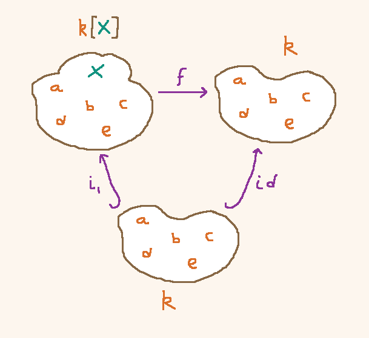

Set-Theoretic Geometry
The purpose of this expository note is to distill something of
what happens in algebraic geometry down to a really elementary
level, where it's just about sets and functions, but which still
retains some of the "geometric" or "spatial" feeling.
The usual slogan is that
space is algebra backwards
but you don't even have to have algebraic operations (like the
multiplication or addition of a ring) to obtain a simple
form of "space".
Triangles of Functions
Let's start by asking some questions that have simple answers.
Let's say $k$ is the five-element set $\{a,b,c,d,e\}$, and let's write
$k[X]$ for the six-element set $\{a,b,c,d,e,X\}$. Is there anything fundamentally
different about the element $X$? Not really. But it's going to be treated differently
in the examples to follow, so I want to emphasize its difference from the outset.
Question: Consider the inclusion $i_1 : k \to k[X]$, and the identity
function $\rid : k \to k$. What functions $f : k[X] \to k$ have the property
that $f \o i_1 = \rid$?

Answer: The value of $f$ on any element of $k$ is fixed by the constraint
that $f i_1 = \rid$. We must have $f(a) = a$, $f(b) = b$, etc. But $f's$ value on $X$
is completely free. Therefore there are five possible $f$. One where $f(X) = a$,
one where $f(X) = b$, etc.
Now let's say $k[X,Y]$ is the set $\{a,b,c,d,e,X,Y\}$, and ask
Question: Consider the inclusion $i_2 : k \to k[X,Y]$, and the identity
function $\rid : k \to k$. What functions $f : k[X,Y] \to k$ are there that have the property
that $f \o i_2 = \rid$?
Answer: As before, the value of $f$ on any element of $k$ is fixed by the constraint
that $f i_2 = \rid$. But $f's$ values on $X$ and $Y$
are completely free, and can be chosen independently of one another.
Therefore there are $5^2 = 25$ possible $f$. One where $f(X) = a, f(Y) = b$,
one where $f(X) = c, f(Y) = c$, one where $f(X) = e, f(Y) = a$, and so on,
one for every choice of where $X$ and $Y$ land in the set $k$.
The Relative Point of View
We will want to treat the entire function from $k$ to $k[X]$ as a single coherent thing.
For any set $k$, say that a $k$-space is a set $S$ together with a map $k \to S$.
So, for example, the set $k[X]$ together with $i_1$ is a $k$-space. the set $k[X,Y]$
together with $i_2$ is a $k$-space. The set $k$ together with $\rid$ is a $k$-space.
We abbreviate these spaces by referring to them as $\sp$ of their carrier set.
So $\sp(k[X])$ means the $k$-space consisting of $k[X]$ and the function $i_1$.
Space is Algebra Backwards
We also want to define a map between $k$-spaces, but to do so in such a way
that is "backwards". If $j_1 : k \to S_1$ and $j_2 : k \to S_2$ are $k$-spaces,
we say that a map from $\sp(S_1) = (S_1, j_1)$ to $\sp(S_2) = (S_2, j_2)$ is a map $h : S_2 \to S_1$ such that $h \o j_2 = j_1$.
So what our earlier questions amount to are:
Question: How many maps are there from $\sp(k)$ to $\sp(k[X])$?
Answer: 5, one for every element of $k$.
Question: How many maps are there from $\sp(k)$ to $\sp(k[X,Y])$?
Answer: 25, one for every pair of elements of $k$.
It can be seen that the number of maps from $\sp(k)$ to $\sp(k[X_1,\ldots,X_n])$
is $5^n$, corresponding to the set of all $n$-tuples of elements taken from $k$.
We contemplate this fact and interpret it as telling us that
$\sp(k[X_1,\ldots,X_n])$ is in some sense an $n$-dimensional space, which has $k^n$ points
and draw some suggestive pictures:
We start with the intuition that $\sp(k)$ is itself, a space consisting of one point.
The points belonging to another spaces $\sp(S)$ are "ways of injecting a space into a point",
i.e. maps $\sp(k) \to \sp(S)$, i.e. functions $S \to k$ making the appropriate triangle
commute.
Lines in Spaces
With this intuition, we can ask questions that feel more genuinely geometric. For
example: how many lines are there in a plane?
By a line we mean a 1-dimensional space, so we must mean $\sp(k[X])$. By
a plane we mean a 2-dimensional space, so we must mean $\sp(k[X,Y])$.
By "locating a line within the plane", we mean a map from the line to the plane:
a map from $\sp(k[X])$ to $\sp(k[X,Y])$. Therefore:
Question: How many ways can we map a line into the plane?
Answer: As many as there are maps $f : k[X,Y] \to k[X]$ such that
$f \o i_2 = i_1$. As before, the requirement that $f \o i_2 = i_1$ means
that the value of $f$ on any of $\{a,b,c,d,e\}$ is determined, but
we have a free choice of $f's$ value on $X$ and $Y$. And we can map
each of $X$ or $Y$ to any element in the set $\{a,b,c,d,e,X\}$. So there
are a total of $(5+1)^2 = 36$ ways of mapping a line into the plane.
Here are some examples: